七年级数学上学期第一次月考·拔尖卷
【北师大版2024】
时间：120分钟 满分：120分 测试范围：丰富的图形世界~有理数及其运算
姓名：___________班级：___________考号：___________
考卷信息：
本卷试题共24题，单选10题，填空6题，解答8题，满分120分，限时120分钟，本卷题型针对性较高，覆盖面广，选题有深度，可衡量学生掌握本章内容的具体情况！
第Ⅰ卷
一．选择题（共10小题，满分30分，每小题3分）
1．（3分）（24-25七年级上·全国·阶段练习）如图所示，若a+b+c=0，则下面判断中一定成立的是（ ）
A．a<0,c<0 B．a<0,c>0
C．a>0,c<0 D．a>0,c>0
2．（3分）（24-25七年级上·江苏南京·阶段练习）若整数a、b满足a+1+b−1=2，则满足条件的a+b的值有（ ）
A．1个 B．2个 C．3个 D．4个
3．（3分）（24-25七年级上·湖北黄石·阶段练习）在−13与23之间插入三个数，使这五个数中每相邻两个数的差相等，则插入的这三个数的和是( )
A．15 B．5 C．9 D．14
4．（3分）如图，CD是直角三角形ABC的高，将直角三角形ABC按以下方式旋转一周可以得到右侧几何体的是（ ）．
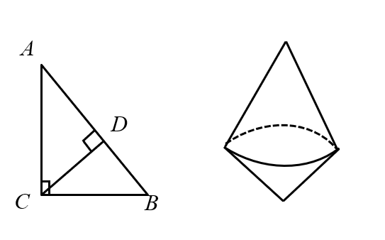
A．绕着AC旋转 B．绕着AB旋转 C．绕着CD旋转 D．绕着BC旋转
5．（3分）（24-25七年级上·江苏南京·阶段练习）若20246−a2024结果的个位数字是1，则a的值可能是（ ）
A．13 B．24 C．35 D．49
6．（3分）（24-25七年级上·山西太原·阶段练习）一个几何体由几个大小相同的小立方块搭成，从上面观察这个几何体，看到的形状如图所示，其中小正方形中的数字表示该位置的小立方块的个数，则从正面看这个几何体的形状图是（ ）

A． B．
B．
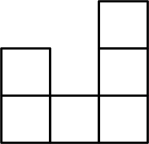
C．
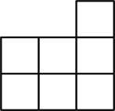
D．
7．（3分）（24-25七年级上·湖北武汉·开学考试）下面各组数中，不能通过加、减、乘、除（含括号）运算得到24的是（ ）
A．1，1，7，7 B．2，2，8，8
C．1，1，2，8 D．1，1，4，6
8．（3分）（24-25七年级上·全国·期末）如图是一个正方体的表面展开图，则该正方体可能是（ ）
A． B．
B． C．
C． D．
D．
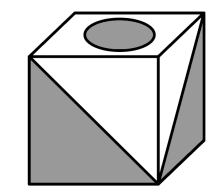
9．（3分）已知abc<0，a+b+c>0且x=a|a|+b|b|+c|c|+ab|ab|+ac|ac|+bc|bc|．则x的值为（ ）
A．0或1 B．0 C．0或−2或1 D．0或1或−6
10．（3分）七年级某班的学生共有49人，军训时排列成7×7的方阵，做了一个游戏，起初全体学生站立，教官每次任意点n个不同学号的学生，被点到的学生，站立的蹲下，蹲下的站立，且学生都正确完成指令同一名学生可以多次被点，则m次点名后，（n，m为正整数）下列说法正确的是（ ）
A．当n为偶数时，无论m何值，蹲下的学生人数不可能为奇数个
B．当n为偶数时，无论m何值，蹲下的学生人数不可能为偶数个
C．当n为奇数时，无论m何值，蹲下的学生人数不可能为偶数个
D．当n为奇数时，无论m何值，蹲下的学生人数不可能为奇数个
二．填空题（共6小题，满分18分，每小题3分）
11．（3分）（24-25七年级上·江苏常州·阶段练习）数轴上表示整数的点为整点，某数轴的单位长度是1厘米，若在这个数轴上随意放上一根长为整数厘米的火柴棒，该火柴棒能盖住3个整点，则这根火柴棒的长度为 厘米．
12．（3分）（24-25七年级上·全国·期中）如图所示，这个几何体是由若干个完全相同的小正方体搭成的．如果在这个几何体上再添加一些相同的小正方体，并保持其从正面看和从左面看得到的图形不变，那么最多可以再添加 个小正方体．

（3分）（24-25七年级上·河北廊坊·阶段练习）现有5000张A4纸，每张厚度为0.1毫米，若将每张纸对折3次，则对折后的5000张纸的厚度为 （用科学记数法表示）毫米．
14．（3分）（2025·陕西咸阳·二模）高斯被认为是历史上最杰出的数学家之一，享有“数学王子”之称．现有一种高斯定义的计算式，已知x表示不超过x的最大整数，例如−0.8=−1．现定义x=x+x，例如x=1.5+1.5=2.5，则−2.5= ．
15．（3分）（24-25七年级上·江苏南京·期末）按图示切割正方体就可以切割出正六边形（正六边形的各顶点恰是其棱的中点），以下此正方体的平面展开图及切割线的画法正确的有 ．（填序号）


16．（3分）（2025·北京门头沟·二模）某快递公司因天气原因需将五种货物进行延迟配送，每名配送员每次只能配送一种货物，从配送开始起进行计时，每延迟一分钟需赔付1元，忽略其它因素的影响，五种货物的配送时间如下表：
货物 | A | B | C | D | E |
配送时间（分钟） | 5 | 8 | 9 | 7 | 10 |
（1）如果由一名配送员进行配送，那么下列三个配送顺序：①D→B→E→A→C；②D→A→C→E→B；③C→A→E→B→D中，赔付最少的是 （填序号）；
（2）如果由两名配送员同时进行配送，最少需要赔付 元．
第Ⅱ卷
三．解答题（共8小题，满分72分）
17．（6分）（24-25七年级上·全国·阶段练习）计算
(1)−12024−16×2−−32
(2)−52−−4+1−0.2×15÷−2
18．（6分）（24-25七年级上·湖北恩施·阶段练习）已知在数轴上有三点A，B，C，点A表示的数为a，点B表示的数为b，且a、b满足a+32+b−1=0．沿A，B，C三点中的一点折叠数轴．
(1)求a，b的值；
(2)若另外两点互相重合，则点C表示的数是______．
19．（8分）（24-25七年级上·湖南衡阳·开学考试）某市出租车的收费标准如下；
里程 | 收费 |
3千米及3千米以下 | 8.00元 |
3千米以上，单程，每增加1千米 | 1.60元 |
3千米以上，往返，每增加1千米 | 1.20元 |
(1)李丽乘出租车从家到外婆家共付车费17.6元，李丽家到外婆家相距多少千米？
(2)王老师从学校去相距6千米的人事局取一份资料并立即回到学校．他怎样坐车比较合算？需付出租车费多少元？
20．（8分）（24-25七年级上·全国·期末）如图所示的是用8个大小相同的小正方体搭成的几何体．
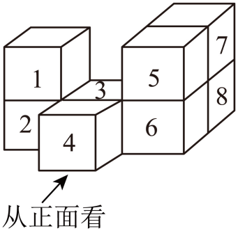
(1)画出该几何体从正面和从左面看到的形状图．
(2)在该几何体中取走一个小正方体，使得到的新几何体同时满足两个要求：①从正面看到的形状图和原几何体从正面看到的形状图相同；②从左面看到的形状图和原几何体从左面看到的形状图也相同．在不改变其他小正方体位置的前提下，可取走的小正方体是________（只取走一个）．
21．（10分）（24-25七年级下·广东佛山·期中）一个三位数，若它是3的倍数，则把它除以3的商作为下一个数：否则，把它各位上的数相加的和再平方后作为下一个数．重复这个过程……直到出现了与之前重复的数，那就输出此数作为最终结果，结束操作．
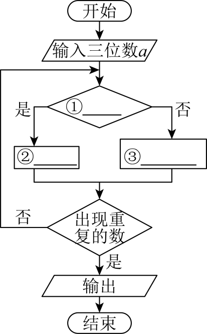
(1)上面的文字语言可以转化为流程图表达．如图是流程图的一部分，请把这个流程图补充完整．① ，② ，③ （在每空中填入题干中的关键词句，把这个运算程序补充完整）
(2)现在输入一个三位数，如123作为起始数，操作第3次后得到的数是多少？请你写出过程．
(3)继续第（2）问的运算，操作 次能够结束循环？最后输出的结果是 ．
(4)若起始数输入的三位数各位上的数字都是相同的数，如输入111，最后输出的结果是 ；输入222，最后输出的结果是 ．
22．（10分）算筹是我国古代的计算工具之一，也是中华民族智慧的结晶，如要表示一个多位数字，即把各位的数字从左到右横列，各位数的筹式需要纵横相间，个位数用纵式表示，十位数用横式表示，百位、万位用纵式，千位、十万位用横式．例如614用算筹表示出来是
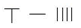
；数字有空位时，如86021用算筹表示出来是 ，百位是空位就不放算筹．
，百位是空位就不放算筹．
6728表示为
6708表示为
（1）8335用算筹可表示为（ ）
A．
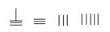
B．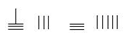
C． D．
D．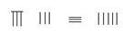
（2）算式“7408+2366”可用如图①中的算筹表示，如图②中算筹表示两个三位数的运算，其结果为________；
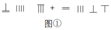
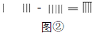
（3）“”表示的最小的数是______________．
23．（12分）（1）小明准备制作一个封闭的正方体盒子，他先用5个大小一样的正方形制成如图1所示的拼接图形（实线部分），经折叠后发现还少一个面，请在图中的拼接图形上再接一个正方形，使新拼接的图形经过折叠后能成为一个封闭的正方体盒子．（添加的正方形用阴影表示．只要画出一种即可）
（2）如图2所示的几何体是由几个相同的正方体搭成的，请画出它从正面看的形状图．
（3）如图3是几个正方体所组成的几何体从上面看的形状图，小正方形中的数字表示该位置小正方体的个数，请画出这个几何体从左面看的形状图．
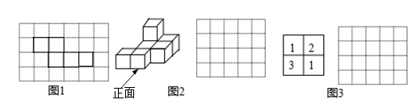
24．（12分）（24-25七年级上·全国·期末）已知点A在数轴上对应的数为a，点B在数轴上对应的数为b，且a+3+b−2=0，A、B之间的距离记为AB=a−b或b−a，请回答问题：
(1)直接写出a，b值，a= ，b= ．
(2)设点P在数轴上对应的数为x，若x−3=5，则x= ．
(3)如图，点M，N，P是数轴上的三点，点M表示的数为4，点N表示的数为-1，动点P表示的数为x．
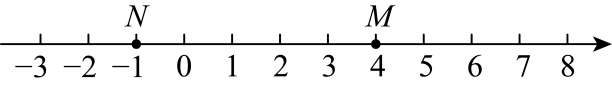
①若点P在点M、N之间，则x+1+x−4= ；
②若x+1+x−4=10，则x= ；
③若点P表示的数是−5，现在有一蚂蚁从点P出发，以每秒1个单位长度的速度向右运动，当经过 秒时，蚂蚁所在的点到点M、点N的距离之和是8．